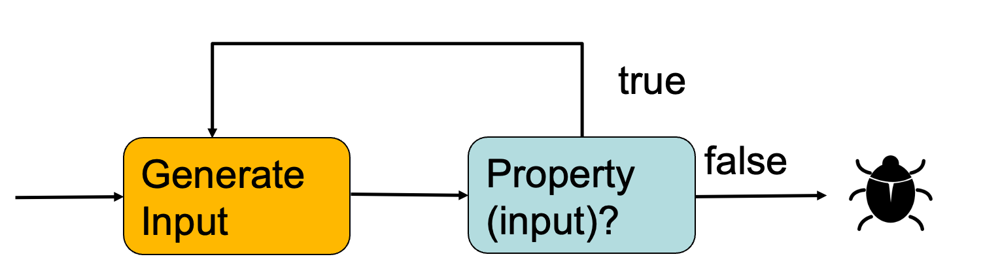
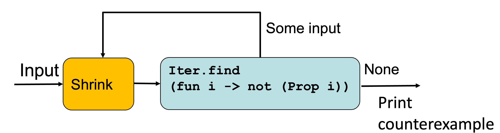

<!DOCTYPE html>
<html><head><meta http-equiv="content-type" content="text/html; charset=utf-8"/><meta name="viewport" content="width=device-width, initial-scale=0.8"/><title>4&nbsp;Property-Based Randomized Testing</title><link rel="stylesheet" type="text/css" href="scribble.css" title="default"/><link rel="stylesheet" type="text/css" href="racket.css" title="default"/><link rel="stylesheet" type="text/css" href="manual-style.css" title="default"/><link rel="stylesheet" type="text/css" href="manual-racket.css" title="default"/><link rel="stylesheet" type="text/css" href="extra.css" title="default"/><link rel="stylesheet" type="text/css" href="faq.css" title="default"/><link rel="stylesheet" type="text/css" href="fancyverb.css" title="default"/><script type="text/javascript" src="scribble-common.js"></script><script type="text/javascript" src="manual-racket.js"></script></head><body id="scribble-racket-lang-org"><div class="tocset"><div class="tocview"><div class="tocviewlist tocviewlisttopspace"><div class="tocviewtitle"><table cellspacing="0" cellpadding="0"><tr><td style="width: 1em;"><a href="javascript:void(0);" title="Expand/Collapse" class="tocviewtoggle" onclick="TocviewToggle(this,&quot;tocview_0&quot;);">&#9660;</a></td><td></td><td><a href="index.html" class="tocviewlink" data-pltdoc="x">CMSC 330 Lecture Notes</a></td></tr></table></div><div class="tocviewsublisttop" style="display: block;" id="tocview_0"><table cellspacing="0" cellpadding="0"><tr><td align="right">1&nbsp;</td><td><a href="intro.html" class="tocviewlink" data-pltdoc="x">Introduction</a></td></tr><tr><td align="right">2&nbsp;</td><td><a href="ocaml.html" class="tocviewlink" data-pltdoc="x">Functional Programming with OCaml</a></td></tr><tr><td align="right">3&nbsp;</td><td><a href="imperative-ocaml.html" class="tocviewlink" data-pltdoc="x">Imperative Programming with OCaml</a></td></tr><tr><td align="right">4&nbsp;</td><td><a href="" class="tocviewselflink" data-pltdoc="x">Property-<wbr></wbr>Based Randomized Testing</a></td></tr><tr><td align="right">5&nbsp;</td><td><a href="regexp.html" class="tocviewlink" data-pltdoc="x">OCaml Regular Expressions</a></td></tr><tr><td align="right">6&nbsp;</td><td><a href="Finite_Automata.html" class="tocviewlink" data-pltdoc="x">Finite Automata</a></td></tr><tr><td align="right">7&nbsp;</td><td><a href="Context_Free_Grammars.html" class="tocviewlink" data-pltdoc="x">Context Free Grammars</a></td></tr><tr><td align="right">8&nbsp;</td><td><a href="Parsing.html" class="tocviewlink" data-pltdoc="x">Parsing</a></td></tr><tr><td align="right">9&nbsp;</td><td><a href="Operational_Semantics.html" class="tocviewlink" data-pltdoc="x">Operational Semantics</a></td></tr><tr><td align="right">10&nbsp;</td><td><a href="Type_Checking.html" class="tocviewlink" data-pltdoc="x">Type Checking</a></td></tr><tr><td align="right">11&nbsp;</td><td><a href="Lambda_Calculus.html" class="tocviewlink" data-pltdoc="x">Lambda Calculus</a></td></tr><tr><td align="right">12&nbsp;</td><td><a href="exercises.html" class="tocviewlink" data-pltdoc="x">OCaml Exercises</a></td></tr></table></div></div><div class="tocviewlist"><table cellspacing="0" cellpadding="0"><tr><td style="width: 1em;"><a href="javascript:void(0);" title="Expand/Collapse" class="tocviewtoggle" onclick="TocviewToggle(this,&quot;tocview_1&quot;);">&#9658;</a></td><td>4&nbsp;</td><td><a href="" class="tocviewselflink" data-pltdoc="x">Property-<wbr></wbr>Based Randomized Testing</a></td></tr></table><div class="tocviewsublistbottom" style="display: none;" id="tocview_1"><table cellspacing="0" cellpadding="0"><tr><td align="right">4.1&nbsp;</td><td><a href="#%28part._.P.B.T__.Property-.Based_.Testing%29" class="tocviewlink" data-pltdoc="x">PBT:<span class="mywbr"> &nbsp;</span> Property-<wbr></wbr>Based Testing</a></td></tr><tr><td align="right">4.2&nbsp;</td><td><a href="#%28part._.Q.Check__.Property-based_.Randomized_.Testing%29" class="tocviewlink" data-pltdoc="x">QCheck:<span class="mywbr"> &nbsp;</span> Property-<wbr></wbr>based Randomized Testing</a></td></tr><tr><td align="right">4.3&nbsp;</td><td><a href="#%28part._.Another_example__.Delete_an_item_from_the_list%29" class="tocviewlink" data-pltdoc="x">Another example:<span class="mywbr"> &nbsp;</span> Delete an item from the list</a></td></tr><tr><td align="right">4.4&nbsp;</td><td><a href="#%28part._.Arbitrary%29" class="tocviewlink" data-pltdoc="x">Arbitrary</a></td></tr><tr><td align="right">4.5&nbsp;</td><td><a href="#%28part._.Example__.Even_.Number%29" class="tocviewlink" data-pltdoc="x">Example:<span class="mywbr"> &nbsp;</span> Even Number</a></td></tr></table></div></div></div><div class="tocsub"><div class="tocsubtitle">On this page:</div><table class="tocsublist" cellspacing="0"><tr><td><span class="tocsublinknumber">4.1<span class="stt">&nbsp;</span></span><a href="#%28part._.P.B.T__.Property-.Based_.Testing%29" class="tocsubseclink" data-pltdoc="x">PBT:<span class="mywbr"> &nbsp;</span> Property-<wbr></wbr>Based Testing</a></td></tr><tr><td><span class="tocsublinknumber">4.2<span class="stt">&nbsp;</span></span><a href="#%28part._.Q.Check__.Property-based_.Randomized_.Testing%29" class="tocsubseclink" data-pltdoc="x">QCheck:<span class="mywbr"> &nbsp;</span> Property-<wbr></wbr>based Randomized Testing</a></td></tr><tr><td><span class="tocsublinknumber">4.2.1<span class="stt">&nbsp;</span></span><a href="#%28part._.Setting_.Up_.Q.Check%29" class="tocsubseclink" data-pltdoc="x">Setting Up QCheck</a></td></tr><tr><td><span class="tocsublinknumber">4.2.2<span class="stt">&nbsp;</span></span><a href="#%28part._.Buggy_.Reverse%29" class="tocsubseclink" data-pltdoc="x">Buggy Reverse</a></td></tr><tr><td><span class="tocsublinknumber">4.3<span class="stt">&nbsp;</span></span><a href="#%28part._.Another_example__.Delete_an_item_from_the_list%29" class="tocsubseclink" data-pltdoc="x">Another example:<span class="mywbr"> &nbsp;</span> Delete an item from the list</a></td></tr><tr><td><span class="tocsublinknumber">4.4<span class="stt">&nbsp;</span></span><a href="#%28part._.Arbitrary%29" class="tocsubseclink" data-pltdoc="x">Arbitrary</a></td></tr><tr><td><span class="tocsublinknumber">4.4.1<span class="stt">&nbsp;</span></span><a href="#%28part._.Random_.Generator%29" class="tocsubseclink" data-pltdoc="x">Random Generator</a></td></tr><tr><td><span class="tocsublinknumber">4.4.2<span class="stt">&nbsp;</span></span><a href="#%28part._.Sampling_.Generators%29" class="tocsubseclink" data-pltdoc="x">Sampling Generators</a></td></tr><tr><td><span class="tocsublinknumber">4.4.3<span class="stt">&nbsp;</span></span><a href="#%28part._.Combining_.Generators%29" class="tocsubseclink" data-pltdoc="x">Combining Generators</a></td></tr><tr><td><span class="tocsublinknumber">4.4.4<span class="stt">&nbsp;</span></span><a href="#%28part._.Shrinking%29" class="tocsubseclink" data-pltdoc="x">Shrinking</a></td></tr><tr><td><span class="tocsublinknumber">4.4.5<span class="stt">&nbsp;</span></span><a href="#%28part._.Printers%29" class="tocsubseclink" data-pltdoc="x">Printers</a></td></tr><tr><td><span class="tocsublinknumber">4.5<span class="stt">&nbsp;</span></span><a href="#%28part._.Example__.Even_.Number%29" class="tocsubseclink" data-pltdoc="x">Example:<span class="mywbr"> &nbsp;</span> Even Number</a></td></tr></table></div></div><div class="maincolumn"><div class="main"><div class="versionbox"><span class="version">9.0</span></div><div class="navsettop"><span class="navleft"><div class="nosearchform"></div>&nbsp;&nbsp;<span class="tocsettoggle">&nbsp;&nbsp;<a href="javascript:void(0);" title="show/hide table of contents" onclick="TocsetToggle();">contents</a></span></span><span class="navright">&nbsp;&nbsp;<a href="imperative-ocaml.html" title="backward to &quot;3 Imperative Programming with OCaml&quot;" data-pltdoc="x" rel="prev">&larr; prev</a>&nbsp;&nbsp;<a href="index.html" title="up to &quot;CMSC 330 Lecture Notes&quot;" data-pltdoc="x">up</a>&nbsp;&nbsp;<a href="regexp.html" title="forward to &quot;5 OCaml Regular Expressions&quot;" data-pltdoc="x" rel="next">next &rarr;</a></span>&nbsp;</div><section class="SsectionLevel2" id="section 4"><h2 class="heading">4<span class="stt">&nbsp;</span><a name="(part._pbt)"></a>Property-Based Randomized Testing<span class="button-group"><a href="#(part._pbt)" class="heading-anchor" title="Link to here">🔗</a><span style="visibility: hidden"> </span></span></h2><table cellspacing="0" cellpadding="0"><tr><td><p><span class="hspace">&nbsp;&nbsp;&nbsp;&nbsp;</span><a href="#%28part._.P.B.T__.Property-.Based_.Testing%29" class="toclink" data-pltdoc="x">4.1<span class="hspace">&nbsp;</span>PBT: Property-Based Testing</a></p></td></tr><tr><td><p><span class="hspace">&nbsp;&nbsp;&nbsp;&nbsp;</span><a href="#%28part._.Q.Check__.Property-based_.Randomized_.Testing%29" class="toclink" data-pltdoc="x">4.2<span class="hspace">&nbsp;</span>QCheck: Property-based Randomized Testing</a></p></td></tr><tr><td><p><span class="hspace">&nbsp;&nbsp;&nbsp;&nbsp;</span><a href="#%28part._.Another_example__.Delete_an_item_from_the_list%29" class="toclink" data-pltdoc="x">4.3<span class="hspace">&nbsp;</span>Another example: Delete an item from the list</a></p></td></tr><tr><td><p><span class="hspace">&nbsp;&nbsp;&nbsp;&nbsp;</span><a href="#%28part._.Arbitrary%29" class="toclink" data-pltdoc="x">4.4<span class="hspace">&nbsp;</span>Arbitrary</a></p></td></tr><tr><td><p><span class="hspace">&nbsp;&nbsp;&nbsp;&nbsp;</span><a href="#%28part._.Example__.Even_.Number%29" class="toclink" data-pltdoc="x">4.5<span class="hspace">&nbsp;</span>Example: Even Number</a></p></td></tr></table><section class="SsectionLevel3" id="section 4.1"><h3 class="heading">4.1<span class="stt">&nbsp;</span><a name="(part._.P.B.T__.Property-.Based_.Testing)"></a>PBT: Property-Based Testing<span class="button-group"><a href="#(part._.P.B.T__.Property-.Based_.Testing)" class="heading-anchor" title="Link to here">🔗</a><span style="visibility: hidden"> </span></span></h3><p>To ensure a program behaves as expected, we write unit tests.
However, writing good unit tests that cover all edge cases can be challenging.
This is where property-based testing becomes useful.</p><p>Property-based testing is a testing approach where you define general
properties (invariants) that your code should always satisfy, and the
testing framework generates random inputs to check that those
properties hold true in a wide variety of cases.</p><p>Instead of writing specific test cases with fixed inputs and
outputs (as in unit testing), you write rules or properties
about the expected behavior, and let the testing framework generate
many random test cases to verify those rules.</p><p><div class="SIntrapara">Let&rsquo;s test &lsquo;rev&lsquo; (list reverse) with a unit test
</div><div class="SIntrapara"><blockquote class="Rfilebox"><p class="Rfiletitle"><span class="Rfilename"><span class="emph">OCaml REPL</span></span></p><blockquote class="Rfilecontent"><p><div class='fancy-box'><div class="sourceCode" id="cb1"><pre
class="sourceCode ocaml"><code class="sourceCode ocaml"><span id="cb1-1"><a href="#cb1-1" aria-hidden="true" tabindex="-1"></a></span>
<span id="cb1-2"><a href="#cb1-2" aria-hidden="true" tabindex="-1"></a><span class="kw">let</span> <span class="kw">rec</span> rev l = </span>
<span id="cb1-3"><a href="#cb1-3" aria-hidden="true" tabindex="-1"></a>  <span class="kw">match</span> l <span class="kw">with</span> </span>
<span id="cb1-4"><a href="#cb1-4" aria-hidden="true" tabindex="-1"></a>   [] -&gt; []</span>
<span id="cb1-5"><a href="#cb1-5" aria-hidden="true" tabindex="-1"></a>   | h::t -&gt; rev t @ [h];;</span>
<span id="cb1-6"><a href="#cb1-6" aria-hidden="true" tabindex="-1"></a></span>
<span id="cb1-7"><a href="#cb1-7" aria-hidden="true" tabindex="-1"></a><span class="kw">let</span> test_reverse = rev [<span class="dv">1</span>;<span class="dv">2</span>;<span class="dv">3</span>] = [<span class="dv">3</span>;<span class="dv">2</span>;<span class="dv">1</span>];;</span>
<span id="cb1-8"><a href="#cb1-8" aria-hidden="true" tabindex="-1"></a></span>
<span id="cb1-9"><a href="#cb1-9" aria-hidden="true" tabindex="-1"></a></span>
<span id="cb1-10"><a href="#cb1-10" aria-hidden="true" tabindex="-1"></a>[Output]</span>
<span id="cb1-11"><a href="#cb1-11" aria-hidden="true" tabindex="-1"></a><span class="kw">val</span> rev : &#39;a <span class="dt">list</span> -&gt; &#39;a <span class="dt">list</span> = &lt;<span class="kw">fun</span>&gt;</span>
<span id="cb1-12"><a href="#cb1-12" aria-hidden="true" tabindex="-1"></a><span class="kw">val</span> test_reverse : <span class="dt">bool</span> = <span class="kw">true</span></span></code></pre></div>
</div></p></blockquote></blockquote></div><div class="SIntrapara">But this test does not show if the &lsquo;rev&lsquo; function works correctly with large
lists, lists with large integers, lists with duplicate values,
string lists with unicode characters, etc.</div></p><p>Instead of unit tests on specific inputs and outputs, what if we could test
properties that hold for all inputs? For example, &lsquo;rev&lsquo; function has
the following property: reversing a list twice gives back the original list.
<div class='fancy-box'><div class="sourceCode" id="cb1"><pre
class="sourceCode ocaml"><code class="sourceCode ocaml"><span id="cb1-1"><a href="#cb1-1" aria-hidden="true" tabindex="-1"></a><span class="kw">let</span> prop_reverse l = rev (rev l) = l</span></code></pre></div>
</div>
In other words, each of the following evaluates to true:
<div class='fancy-box'><div class="sourceCode" id="cb1"><pre
class="sourceCode ocaml"><code class="sourceCode ocaml"><span id="cb1-1"><a href="#cb1-1" aria-hidden="true" tabindex="-1"></a></span>
<span id="cb1-2"><a href="#cb1-2" aria-hidden="true" tabindex="-1"></a>prop_reverse []</span>
<span id="cb1-3"><a href="#cb1-3" aria-hidden="true" tabindex="-1"></a>prop_reverse [<span class="dv">1</span>; <span class="dv">2</span>; <span class="dv">3</span>]</span>
<span id="cb1-4"><a href="#cb1-4" aria-hidden="true" tabindex="-1"></a>prop_reverse [<span class="fl">1.0</span>; <span class="fl">2.22</span>]</span></code></pre></div>
</div></p><p>Now, we can randomly generate large lists of various types and feed them as
input to the property <span style="font-weight: bold">prop_reverse</span>.
If <span style="font-weight: bold">prop_reverse</span> returns false for any input, we&rsquo;ve found a bug.
If it returns true for millions of inputs, it doesn&rsquo;t guarantee the absence of bugs &#8212;
but it gives us a high level of confidence in the correctness of the rev function.</p><p><div class="SIntrapara">Here some examples of the propeties we can test:
</div><div class="SIntrapara"><ul><li><p>Sorting: the output must be sorted and it is the permutation of the input</p></li><li><p>HashMap: Inserting a key value pair, and searching the key must return the value. Delete a key and searching
for the key must ruturn Not_Found. Inserting the same key multiple times, and
searching for the key must return the last value insrted etc. </p></li><li><p>Valid Triangle: Adding any two sides must be greater than the third side.</p></li></ul></div><div class="SIntrapara">Coming up with a correct and meaningful properties is a challnge. In this lecture, we will study
how to test OCaml programs using
property based testing library called QCheck.</div></p></section><section class="SsectionLevel3" id="section 4.2"><h3 class="heading">4.2<span class="stt">&nbsp;</span><a name="(part._.Q.Check__.Property-based_.Randomized_.Testing)"></a>QCheck: Property-based Randomized Testing<span class="button-group"><a href="#(part._.Q.Check__.Property-based_.Randomized_.Testing)" class="heading-anchor" title="Link to here">🔗</a><span style="visibility: hidden"> </span></span></h3><p><a href="https://c-cube.github.io/qcheck/0.6/QCheck.html">QCheck</a> is a Property-Based Testing framework for OCaml. It is a framework that repeatedly
generates random inputs, and uses them to confirm that properties hold. For example, it
randomly generaly lists to confirm the &lsquo;prop-reverse&lsquo; property of the &lsquo;rev&lsquo; function hold.
<div class='fancy-box'><div class="sourceCode" id="cb1"><pre
class="sourceCode ocaml"><code class="sourceCode ocaml"><span id="cb1-1"><a href="#cb1-1" aria-hidden="true" tabindex="-1"></a><span class="kw">let</span> prop_reverse l = rev (rev l) = l;;</span></code></pre></div>
</div>
QCheck tests are described by a generator that generates random inputs and a property,
a bool-valued function. The input generator generates a random input and tests if
the property holds with the input. If the property holds, it will try again with another
random input. If the property does not hold, we just found a counterexample, or a bug.
</p><section class="SsectionLevel4" id="section 4.2.1"><h4 class="heading">4.2.1<span class="stt">&nbsp;</span><a name="(part._.Setting_.Up_.Q.Check)"></a>Setting Up QCheck<span class="button-group"><a href="#(part._.Setting_.Up_.Q.Check)" class="heading-anchor" title="Link to here">🔗</a><span style="visibility: hidden"> </span></span></h4><p><div class="SIntrapara"><ul><li><p>To install QCheck module, run
<div class='fancy-box'><div class="sourceCode" id="cb1"><pre
class="sourceCode ocaml"><code class="sourceCode ocaml"><span id="cb1-1"><a href="#cb1-1" aria-hidden="true" tabindex="-1"></a>opam install qcheck</span></code></pre></div>
</div></p></li><li><p>In the test module, open the Qcheck module
<div class='fancy-box'><div class="sourceCode" id="cb1"><pre
class="sourceCode ocaml"><code class="sourceCode ocaml"><span id="cb1-1"><a href="#cb1-1" aria-hidden="true" tabindex="-1"></a><span class="kw">open</span> QCheck</span></code></pre></div>
</div></p></li><li><p>In utop, before open QCheck, run
<div class='fancy-box'><div class="sourceCode" id="cb1"><pre
class="sourceCode ocaml"><code class="sourceCode ocaml"><span id="cb1-1"><a href="#cb1-1" aria-hidden="true" tabindex="-1"></a><span class="ot">#require &quot;qcheck&quot;</span></span></code></pre></div>
</div></p></li><li><p>In a <span style="font-weight: bold">dune</span> project, add the following to the <span style="font-weight: bold">dune</span> file:
<div class='fancy-box'><div class="sourceCode" id="cb1"><pre
class="sourceCode ocaml"><code class="sourceCode ocaml"><span id="cb1-1"><a href="#cb1-1" aria-hidden="true" tabindex="-1"></a>(libraries qcheck)</span></code></pre></div>
</div></p></li></ul></div><div class="SIntrapara">Here is a complete example of using QCheck to test a property:
</div><div class="SIntrapara"><blockquote class="Rfilebox"><p class="Rfiletitle"><span class="Rfilename"><span class="emph">OCaml REPL</span></span></p><blockquote class="Rfilecontent"><p><div class='fancy-box'><div class="sourceCode" id="cb1"><pre
class="sourceCode ocaml"><code class="sourceCode ocaml"><span id="cb1-1"><a href="#cb1-1" aria-hidden="true" tabindex="-1"></a></span>
<span id="cb1-2"><a href="#cb1-2" aria-hidden="true" tabindex="-1"></a><span class="co">(* List reverse *)</span></span>
<span id="cb1-3"><a href="#cb1-3" aria-hidden="true" tabindex="-1"></a><span class="kw">let</span> <span class="kw">rec</span> rev l = </span>
<span id="cb1-4"><a href="#cb1-4" aria-hidden="true" tabindex="-1"></a>  <span class="kw">match</span> l <span class="kw">with</span> </span>
<span id="cb1-5"><a href="#cb1-5" aria-hidden="true" tabindex="-1"></a>   [] -&gt; []</span>
<span id="cb1-6"><a href="#cb1-6" aria-hidden="true" tabindex="-1"></a>   | h::t -&gt; rev t @ [h];;</span>
<span id="cb1-7"><a href="#cb1-7" aria-hidden="true" tabindex="-1"></a><span class="co">(* a property that holds for the list reverse *)</span></span>
<span id="cb1-8"><a href="#cb1-8" aria-hidden="true" tabindex="-1"></a><span class="kw">let</span> prop_reverse l = rev (rev l) = l;;</span>
<span id="cb1-9"><a href="#cb1-9" aria-hidden="true" tabindex="-1"></a></span>
<span id="cb1-10"><a href="#cb1-10" aria-hidden="true" tabindex="-1"></a><span class="ot">#require &quot;qcheck&quot;;;</span></span>
<span id="cb1-11"><a href="#cb1-11" aria-hidden="true" tabindex="-1"></a><span class="kw">open</span> QCheck;;</span>
<span id="cb1-12"><a href="#cb1-12" aria-hidden="true" tabindex="-1"></a></span>
<span id="cb1-13"><a href="#cb1-13" aria-hidden="true" tabindex="-1"></a><span class="co">(* A QCheck test *)</span></span>
<span id="cb1-14"><a href="#cb1-14" aria-hidden="true" tabindex="-1"></a><span class="kw">let</span> test =</span>
<span id="cb1-15"><a href="#cb1-15" aria-hidden="true" tabindex="-1"></a>   Test.make      <span class="co">(* make a test *)</span></span>
<span id="cb1-16"><a href="#cb1-16" aria-hidden="true" tabindex="-1"></a>   ~count:<span class="dv">10</span>    <span class="co">(* number of random tests. Change this to a </span></span>
<span id="cb1-17"><a href="#cb1-17" aria-hidden="true" tabindex="-1"></a><span class="co">                  larger number if you want to test more *)</span></span>
<span id="cb1-18"><a href="#cb1-18" aria-hidden="true" tabindex="-1"></a>   ~name:<span class="st">&quot;reverse_test&quot;</span>  <span class="co">(* name of the test *)</span></span>
<span id="cb1-19"><a href="#cb1-19" aria-hidden="true" tabindex="-1"></a>   (<span class="dt">list</span> nat_small) <span class="co">(* an arbitrary. Here is generates a list </span></span>
<span id="cb1-20"><a href="#cb1-20" aria-hidden="true" tabindex="-1"></a><span class="co">                       of random ints *)</span></span>
<span id="cb1-21"><a href="#cb1-21" aria-hidden="true" tabindex="-1"></a>  (<span class="kw">fun</span> x-&gt; prop_reverse x) <span class="co">(* calls the property *)</span></span>
<span id="cb1-22"><a href="#cb1-22" aria-hidden="true" tabindex="-1"></a>;;</span>
<span id="cb1-23"><a href="#cb1-23" aria-hidden="true" tabindex="-1"></a><span class="co">(* run the QCheck Test *)</span></span>
<span id="cb1-24"><a href="#cb1-24" aria-hidden="true" tabindex="-1"></a>QCheck_runner.run_tests ~verbose:<span class="kw">true</span> [test];;</span>
<span id="cb1-25"><a href="#cb1-25" aria-hidden="true" tabindex="-1"></a></span>
<span id="cb1-26"><a href="#cb1-26" aria-hidden="true" tabindex="-1"></a></span>
<span id="cb1-27"><a href="#cb1-27" aria-hidden="true" tabindex="-1"></a>[Output]</span>
<span id="cb1-28"><a href="#cb1-28" aria-hidden="true" tabindex="-1"></a><span class="kw">val</span> rev : &#39;a <span class="dt">list</span> -&gt; &#39;a <span class="dt">list</span> = &lt;<span class="kw">fun</span>&gt;</span>
<span id="cb1-29"><a href="#cb1-29" aria-hidden="true" tabindex="-1"></a><span class="kw">val</span> prop_reverse : &#39;a <span class="dt">list</span> -&gt; <span class="dt">bool</span> = &lt;<span class="kw">fun</span>&gt;</span>
<span id="cb1-30"><a href="#cb1-30" aria-hidden="true" tabindex="-1"></a><span class="kw">val</span> test : QCheck.Test.t = QCheck2.Test.Test &lt;abstr&gt;</span>
<span id="cb1-31"><a href="#cb1-31" aria-hidden="true" tabindex="-1"></a>[<span class="dv">2</span>Krandom seed: <span class="dv">410989923</span></span>
<span id="cb1-32"><a href="#cb1-32" aria-hidden="true" tabindex="-1"></a>generated error fail pass / total     time test name</span>
<span id="cb1-33"><a href="#cb1-33" aria-hidden="true" tabindex="-1"></a>[<span class="dv">2</span>K[ ]    <span class="dv">0</span>    <span class="dv">0</span>    <span class="dv">0</span>    <span class="dv">0</span> /   <span class="dv">10</span>     <span class="fl">0.0</span>s reverse_test[<span class="dv">2</span>K[[<span class="dv">32</span>;<span class="dv">1</span>m✓[<span class="dv">0</span>m]   <span class="dv">10</span>    <span class="dv">0</span>    <span class="dv">0</span>   <span class="dv">10</span> /   <span class="dv">10</span>     <span class="fl">0.0</span>s reverse_test</span>
<span id="cb1-34"><a href="#cb1-34" aria-hidden="true" tabindex="-1"></a>================================================================================</span>
<span id="cb1-35"><a href="#cb1-35" aria-hidden="true" tabindex="-1"></a>[<span class="dv">32</span>;<span class="dv">1</span>msuccess[<span class="dv">0</span>m (ran <span class="dv">1</span> tests)</span>
<span id="cb1-36"><a href="#cb1-36" aria-hidden="true" tabindex="-1"></a>- : <span class="dt">int</span> = <span class="dv">0</span></span></code></pre></div>
</div></p></blockquote></blockquote></div></p><p>It shows that QCheck generated 10 random tests and all of the 10 tests passed.</p></section><section class="SsectionLevel4" id="section 4.2.2"><h4 class="heading">4.2.2<span class="stt">&nbsp;</span><a name="(part._.Buggy_.Reverse)"></a>Buggy Reverse<span class="button-group"><a href="#(part._.Buggy_.Reverse)" class="heading-anchor" title="Link to here">🔗</a><span style="visibility: hidden"> </span></span></h4><p>Assume the &lsquo;rev&lsquo; function is implemented as:
<div class='fancy-box'><div class="sourceCode" id="cb1"><pre
class="sourceCode ocaml"><code class="sourceCode ocaml"><span id="cb1-1"><a href="#cb1-1" aria-hidden="true" tabindex="-1"></a><span class="kw">let</span> rev l = l  <span class="co">(* returns the same list *)</span></span></code></pre></div>
</div>
Obviously, this implementation of &lsquo;rev&lsquo; is not correct. A simple unit test would catch the bug:
<div class='fancy-box'><div class="sourceCode" id="cb1"><pre
class="sourceCode ocaml"><code class="sourceCode ocaml"><span id="cb1-1"><a href="#cb1-1" aria-hidden="true" tabindex="-1"></a><span class="kw">let</span> test_reverse = rev [<span class="dv">1</span>;<span class="dv">2</span>;<span class="dv">3</span>] = [<span class="dv">3</span>;<span class="dv">2</span>;<span class="dv">1</span>]</span></code></pre></div>
</div>
However, the property &lsquo;prop_reverse&lsquo; does not catch the bug!
<div class='fancy-box'><div class="sourceCode" id="cb1"><pre
class="sourceCode ocaml"><code class="sourceCode ocaml"><span id="cb1-1"><a href="#cb1-1" aria-hidden="true" tabindex="-1"></a><span class="kw">let</span> prop_reverse l = rev (rev l) = l</span></code></pre></div>
</div>
because the property always holds if &lsquo;rev&lsquo; returns the original
list without reversing it. Therefore, we need a better property.
<div class='fancy-box'><div class="sourceCode" id="cb1"><pre
class="sourceCode ocaml"><code class="sourceCode ocaml"><span id="cb1-1"><a href="#cb1-1" aria-hidden="true" tabindex="-1"></a></span>
<span id="cb1-2"><a href="#cb1-2" aria-hidden="true" tabindex="-1"></a><span class="kw">let</span> prop_reverse2 l1 m l2 =</span>
<span id="cb1-3"><a href="#cb1-3" aria-hidden="true" tabindex="-1"></a>   rev (l1 @ [m] @ l2) = rev l2 @ [m] @ rev l1</span></code></pre></div>
</div>
This property does not hold for the buggy implementation of <span style="font-weight: bold">rev</span>. Fox example:
<div class='fancy-box'><div class="sourceCode" id="cb1"><pre
class="sourceCode ocaml"><code class="sourceCode ocaml"><span id="cb1-1"><a href="#cb1-1" aria-hidden="true" tabindex="-1"></a></span>
<span id="cb1-2"><a href="#cb1-2" aria-hidden="true" tabindex="-1"></a>rev [<span class="dv">1</span>;<span class="dv">2</span>]@[<span class="dv">3</span>]@[<span class="dv">4</span>;<span class="dv">5</span>] = rev [<span class="dv">4</span>;<span class="dv">5</span>] @ rev [<span class="dv">3</span>] @ rev [<span class="dv">1</span>;<span class="dv">2</span>]</span>
<span id="cb1-3"><a href="#cb1-3" aria-hidden="true" tabindex="-1"></a>    [<span class="dv">1</span>;<span class="dv">2</span>;<span class="dv">3</span>;<span class="dv">4</span>;<span class="dv">5</span>] = [<span class="dv">4</span>;<span class="dv">5</span>;<span class="dv">3</span>;<span class="dv">1</span>;<span class="dv">2</span>] <span class="co">(* property fails *)</span></span></code></pre></div>
</div>
This property holds only if rev is implemented correctly.
Lesson learned: garbage in, garbage out &#8212; if the property
itself is flawed, property-based testing won&#8217;t catch the bug.</p></section></section><section class="SsectionLevel3" id="section 4.3"><h3 class="heading">4.3<span class="stt">&nbsp;</span><a name="(part._.Another_example__.Delete_an_item_from_the_list)"></a>Another example: Delete an item from the list<span class="button-group"><a href="#(part._.Another_example__.Delete_an_item_from_the_list)" class="heading-anchor" title="Link to here">🔗</a><span style="visibility: hidden"> </span></span></h3><p><div class="SIntrapara">We want to test the property that if &lsquo;x&lsquo; is deleted from the list,
it shoud not be a member of this list.
</div><div class="SIntrapara"><blockquote class="Rfilebox"><p class="Rfiletitle"><span class="Rfilename"><span class="emph">OCaml REPL</span></span></p><blockquote class="Rfilecontent"><p><div class='fancy-box'><div class="sourceCode" id="cb1"><pre
class="sourceCode ocaml"><code class="sourceCode ocaml"><span id="cb1-1"><a href="#cb1-1" aria-hidden="true" tabindex="-1"></a><span class="ot">#require &quot;qcheck&quot;;; </span></span>
<span id="cb1-2"><a href="#cb1-2" aria-hidden="true" tabindex="-1"></a> <span class="kw">open</span> QCheck;; </span>
<span id="cb1-3"><a href="#cb1-3" aria-hidden="true" tabindex="-1"></a> </span>
<span id="cb1-4"><a href="#cb1-4" aria-hidden="true" tabindex="-1"></a> <span class="kw">let</span> <span class="kw">rec</span> delete x l = <span class="kw">match</span> l <span class="kw">with</span> </span>
<span id="cb1-5"><a href="#cb1-5" aria-hidden="true" tabindex="-1"></a>     [] -&gt; [] </span>
<span id="cb1-6"><a href="#cb1-6" aria-hidden="true" tabindex="-1"></a>     | (y::ys) -&gt; <span class="kw">if</span> x = y <span class="kw">then</span> ys </span>
<span id="cb1-7"><a href="#cb1-7" aria-hidden="true" tabindex="-1"></a>                  <span class="kw">else</span> y::(delete x ys);; </span>
<span id="cb1-8"><a href="#cb1-8" aria-hidden="true" tabindex="-1"></a> </span>
<span id="cb1-9"><a href="#cb1-9" aria-hidden="true" tabindex="-1"></a> <span class="kw">let</span> prop_delete x l = <span class="dt">not</span> (<span class="dt">List</span>.mem x (delete x l));; </span>
<span id="cb1-10"><a href="#cb1-10" aria-hidden="true" tabindex="-1"></a> </span>
<span id="cb1-11"><a href="#cb1-11" aria-hidden="true" tabindex="-1"></a> <span class="kw">let</span> test = </span>
<span id="cb1-12"><a href="#cb1-12" aria-hidden="true" tabindex="-1"></a>    Test.make </span>
<span id="cb1-13"><a href="#cb1-13" aria-hidden="true" tabindex="-1"></a>      ~count:<span class="dv">1000</span> </span>
<span id="cb1-14"><a href="#cb1-14" aria-hidden="true" tabindex="-1"></a>      ~name:<span class="st">&quot;delete_test&quot;</span> </span>
<span id="cb1-15"><a href="#cb1-15" aria-hidden="true" tabindex="-1"></a>      (pair small_int (<span class="dt">list</span> small_int)) </span>
<span id="cb1-16"><a href="#cb1-16" aria-hidden="true" tabindex="-1"></a>      (<span class="kw">fun</span>(x,l)-&gt; prop_delete  x l);; </span>
<span id="cb1-17"><a href="#cb1-17" aria-hidden="true" tabindex="-1"></a> </span>
<span id="cb1-18"><a href="#cb1-18" aria-hidden="true" tabindex="-1"></a> QCheck_runner.run_tests [test];;</span>
<span id="cb1-19"><a href="#cb1-19" aria-hidden="true" tabindex="-1"></a></span>
<span id="cb1-20"><a href="#cb1-20" aria-hidden="true" tabindex="-1"></a>[Output]</span>
<span id="cb1-21"><a href="#cb1-21" aria-hidden="true" tabindex="-1"></a><span class="kw">val</span> delete : &#39;a -&gt; &#39;a <span class="dt">list</span> -&gt; &#39;a <span class="dt">list</span> = &lt;<span class="kw">fun</span>&gt;</span>
<span id="cb1-22"><a href="#cb1-22" aria-hidden="true" tabindex="-1"></a><span class="kw">val</span> prop_delete : &#39;a -&gt; &#39;a <span class="dt">list</span> -&gt; <span class="dt">bool</span> = &lt;<span class="kw">fun</span>&gt;</span>
<span id="cb1-23"><a href="#cb1-23" aria-hidden="true" tabindex="-1"></a>Line <span class="dv">6</span>, characters <span class="dv">12-21</span>:</span>
<span id="cb1-24"><a href="#cb1-24" aria-hidden="true" tabindex="-1"></a><span class="dv">6</span> |       (pair small_int (<span class="dt">list</span> small_int)) </span>
<span id="cb1-25"><a href="#cb1-25" aria-hidden="true" tabindex="-1"></a>                ^^^^^^^^^</span>
<span id="cb1-26"><a href="#cb1-26" aria-hidden="true" tabindex="-1"></a>Alert deprecated: QCheck.small_int</span>
<span id="cb1-27"><a href="#cb1-27" aria-hidden="true" tabindex="-1"></a>Use [nat_small] instead</span>
<span id="cb1-28"><a href="#cb1-28" aria-hidden="true" tabindex="-1"></a>Line <span class="dv">6</span>, characters <span class="dv">28-37</span>:</span>
<span id="cb1-29"><a href="#cb1-29" aria-hidden="true" tabindex="-1"></a><span class="dv">6</span> |       (pair small_int (<span class="dt">list</span> small_int)) </span>
<span id="cb1-30"><a href="#cb1-30" aria-hidden="true" tabindex="-1"></a>                                ^^^^^^^^^</span>
<span id="cb1-31"><a href="#cb1-31" aria-hidden="true" tabindex="-1"></a>Alert deprecated: QCheck.small_int</span>
<span id="cb1-32"><a href="#cb1-32" aria-hidden="true" tabindex="-1"></a>Use [nat_small] instead</span>
<span id="cb1-33"><a href="#cb1-33" aria-hidden="true" tabindex="-1"></a><span class="kw">val</span> test : QCheck.Test.t = QCheck2.Test.Test &lt;abstr&gt;</span>
<span id="cb1-34"><a href="#cb1-34" aria-hidden="true" tabindex="-1"></a>[<span class="dv">2</span>Krandom seed: <span class="dv">7996511</span></span>
<span id="cb1-35"><a href="#cb1-35" aria-hidden="true" tabindex="-1"></a>--- [<span class="dv">31</span>;<span class="dv">1</span>mFailure[<span class="dv">0</span>m --------------------------------------------------------------------</span>
<span id="cb1-36"><a href="#cb1-36" aria-hidden="true" tabindex="-1"></a>Test delete_test failed (<span class="dv">13</span> shrink steps):</span>
<span id="cb1-37"><a href="#cb1-37" aria-hidden="true" tabindex="-1"></a>(<span class="dv">0</span>, [<span class="dv">0</span>; <span class="dv">0</span>])</span>
<span id="cb1-38"><a href="#cb1-38" aria-hidden="true" tabindex="-1"></a>================================================================================</span>
<span id="cb1-39"><a href="#cb1-39" aria-hidden="true" tabindex="-1"></a>[<span class="dv">31</span>;<span class="dv">1</span>mfailure[<span class="dv">0</span>m (<span class="dv">1</span> tests failed, <span class="dv">0</span> tests errored, ran <span class="dv">1</span> tests)</span>
<span id="cb1-40"><a href="#cb1-40" aria-hidden="true" tabindex="-1"></a>- : <span class="dt">int</span> = <span class="dv">1</span></span></code></pre></div>
</div></p></blockquote></blockquote></div><div class="SIntrapara">It immediately finds a counterexample. The counterexample shows
that when are duplicates in the list, The &lsquo;delete&lsquo; only deleted the
first occurrence. For example:
<div class='fancy-box'><div class="sourceCode" id="cb1"><pre
class="sourceCode ocaml"><code class="sourceCode ocaml"><span id="cb1-1"><a href="#cb1-1" aria-hidden="true" tabindex="-1"></a>delete <span class="dv">2</span> [<span class="dv">2</span>;<span class="dv">2</span>;<span class="dv">3</span>]  returns [<span class="dv">2</span>;<span class="dv">3</span>]</span></code></pre></div>
</div></div></p></section><section class="SsectionLevel3" id="section 4.4"><h3 class="heading">4.4<span class="stt">&nbsp;</span><a name="(part._.Arbitrary)"></a>Arbitrary<span class="button-group"><a href="#(part._.Arbitrary)" class="heading-anchor" title="Link to here">🔗</a><span style="visibility: hidden"> </span></span></h3><p><div class="SIntrapara">An &lsquo;&rsquo;a arbitrary&lsquo; represents an "arbitrary" value of type &lsquo;&rsquo;a&lsquo;.
It is used to describe how to
</div><div class="SIntrapara"><ul><li><p>generate random values</p></li><li><p>shrink them (make counter-examples as small as possible)</p></li><li><p>print them.</p></li></ul></div><div class="SIntrapara">Here a some examples of the arbitraries QCehck offers:
<div class='fancy-box'><div class="sourceCode" id="cb1"><pre
class="sourceCode ocaml"><code class="sourceCode ocaml"><span id="cb1-1"><a href="#cb1-1" aria-hidden="true" tabindex="-1"></a></span>
<span id="cb1-2"><a href="#cb1-2" aria-hidden="true" tabindex="-1"></a>small_int:  <span class="dt">int</span> arbitrary</span>
<span id="cb1-3"><a href="#cb1-3" aria-hidden="true" tabindex="-1"></a><span class="dt">list</span>:       &#39;a arbitrary -&gt; &#39;a <span class="dt">list</span> arbitrary</span>
<span id="cb1-4"><a href="#cb1-4" aria-hidden="true" tabindex="-1"></a>triple:     &#39;a arbitrary -&gt; &#39;b arbitrary -&gt; </span>
<span id="cb1-5"><a href="#cb1-5" aria-hidden="true" tabindex="-1"></a>            &#39;c arbitrary -&gt; (&#39;a * &#39;b * &#39;c) arbitrary</span></code></pre></div>
</div>
The type &lsquo;arbitrary&lsquo; is defined as:
<div class='fancy-box'><div class="sourceCode" id="cb1"><pre
class="sourceCode ocaml"><code class="sourceCode ocaml"><span id="cb1-1"><a href="#cb1-1" aria-hidden="true" tabindex="-1"></a></span>
<span id="cb1-2"><a href="#cb1-2" aria-hidden="true" tabindex="-1"></a><span class="kw">type</span> &#39;a arbitrary = {</span>
<span id="cb1-3"><a href="#cb1-3" aria-hidden="true" tabindex="-1"></a>   gen: &#39;a Gen.t;</span>
<span id="cb1-4"><a href="#cb1-4" aria-hidden="true" tabindex="-1"></a>   print: (&#39;a ‑&gt; <span class="dt">string</span>) <span class="dt">option</span>; <span class="co">(** print values *)</span></span>
<span id="cb1-5"><a href="#cb1-5" aria-hidden="true" tabindex="-1"></a>   small: (&#39;a ‑&gt; <span class="dt">int</span>) <span class="dt">option</span>; <span class="co">(** size of example *)</span></span>
<span id="cb1-6"><a href="#cb1-6" aria-hidden="true" tabindex="-1"></a>   shrink: &#39;a Shrink.t <span class="dt">option</span>; <span class="co">(** shrink to smaller examples *)</span></span>
<span id="cb1-7"><a href="#cb1-7" aria-hidden="true" tabindex="-1"></a>   collect: (&#39;a ‑&gt; <span class="dt">string</span>) <span class="dt">option</span>; <span class="co">(** map value to tag, and group by tag *)</span></span>
<span id="cb1-8"><a href="#cb1-8" aria-hidden="true" tabindex="-1"></a>   stats : &#39;a stat <span class="dt">list</span>;  <span class="co">(** statistics to collect and print *)</span></span>
<span id="cb1-9"><a href="#cb1-9" aria-hidden="true" tabindex="-1"></a>}</span></code></pre></div>
</div>
We can build custom an &lsquo;arbitrary&lsquo; by calling &lsquo;QCheck.make&lsquo;.
<div class='fancy-box'><div class="sourceCode" id="cb1"><pre
class="sourceCode ocaml"><code class="sourceCode ocaml"><span id="cb1-1"><a href="#cb1-1" aria-hidden="true" tabindex="-1"></a></span>
<span id="cb1-2"><a href="#cb1-2" aria-hidden="true" tabindex="-1"></a>make :</span>
<span id="cb1-3"><a href="#cb1-3" aria-hidden="true" tabindex="-1"></a>  ?print:&#39;a Print.t -&gt;</span>
<span id="cb1-4"><a href="#cb1-4" aria-hidden="true" tabindex="-1"></a>  ?small:(&#39;a -&gt; <span class="dt">int</span>) -&gt;</span>
<span id="cb1-5"><a href="#cb1-5" aria-hidden="true" tabindex="-1"></a>  ?shrink:&#39;a Shrink.t -&gt;</span>
<span id="cb1-6"><a href="#cb1-6" aria-hidden="true" tabindex="-1"></a>  ?collect:(&#39;a -&gt; <span class="dt">string</span>) -&gt;</span>
<span id="cb1-7"><a href="#cb1-7" aria-hidden="true" tabindex="-1"></a>  ?stats:&#39;a stat <span class="dt">list</span> -&gt; &#39;a Gen.t -&gt; &#39;a arbitrary</span>
<span id="cb1-8"><a href="#cb1-8" aria-hidden="true" tabindex="-1"></a></span></code></pre></div>
</div>
For example: Let&rsquo;s build an arbitrary that generates random ints:
<div class='fancy-box'><div class="sourceCode" id="cb1"><pre
class="sourceCode ocaml"><code class="sourceCode ocaml"><span id="cb1-1"><a href="#cb1-1" aria-hidden="true" tabindex="-1"></a></span>
<span id="cb1-2"><a href="#cb1-2" aria-hidden="true" tabindex="-1"></a># make (Gen.<span class="dt">int</span>);;</span>
<span id="cb1-3"><a href="#cb1-3" aria-hidden="true" tabindex="-1"></a>- : <span class="dt">int</span> arbitrary =</span>
<span id="cb1-4"><a href="#cb1-4" aria-hidden="true" tabindex="-1"></a>{gen = &lt;<span class="kw">fun</span>&gt;; print = <span class="dt">None</span>; small = <span class="dt">None</span>; shrink = <span class="dt">None</span>; collect = <span class="dt">None</span>;stats = []}</span></code></pre></div>
</div></div></p><section class="SsectionLevel4" id="section 4.4.1"><h4 class="heading">4.4.1<span class="stt">&nbsp;</span><a name="(part._.Random_.Generator)"></a>Random Generator<span class="button-group"><a href="#(part._.Random_.Generator)" class="heading-anchor" title="Link to here">🔗</a><span style="visibility: hidden"> </span></span></h4><p><span style="font-weight: bold">&rsquo;a QCheck.Gen.t</span> is a function that takes in a Pseudorandom number generator, uses it to produce a random value of type &lsquo;&#8216;a&lsquo;.
For example, &lsquo;QCheck.Gen.int&lsquo; generates random integers, while <span style="font-weight: bold">QCheck.Gen.string</span>
 generates random strings. Let us look at  a few more of them:
<div class='fancy-box'><div class="sourceCode" id="cb1"><pre
class="sourceCode ocaml"><code class="sourceCode ocaml"><span id="cb1-1"><a href="#cb1-1" aria-hidden="true" tabindex="-1"></a></span>
<span id="cb1-2"><a href="#cb1-2" aria-hidden="true" tabindex="-1"></a><span class="kw">module</span> Gen : </span>
<span id="cb1-3"><a href="#cb1-3" aria-hidden="true" tabindex="-1"></a>    <span class="kw">sig</span></span>
<span id="cb1-4"><a href="#cb1-4" aria-hidden="true" tabindex="-1"></a>      <span class="kw">val</span> <span class="dt">int</span> : <span class="dt">int</span> t</span>
<span id="cb1-5"><a href="#cb1-5" aria-hidden="true" tabindex="-1"></a>      <span class="kw">val</span> small_int : <span class="dt">int</span> t</span>
<span id="cb1-6"><a href="#cb1-6" aria-hidden="true" tabindex="-1"></a>      <span class="kw">val</span> int_range : <span class="dt">int</span> -&gt; <span class="dt">int</span> -&gt; <span class="dt">int</span> t</span>
<span id="cb1-7"><a href="#cb1-7" aria-hidden="true" tabindex="-1"></a>      <span class="kw">val</span> <span class="dt">list</span> : &#39;a t -&gt; &#39;a <span class="dt">list</span> t</span>
<span id="cb1-8"><a href="#cb1-8" aria-hidden="true" tabindex="-1"></a>      <span class="kw">val</span> <span class="dt">string</span> : ?gen:<span class="dt">char</span> t -&gt; <span class="dt">string</span> t</span>
<span id="cb1-9"><a href="#cb1-9" aria-hidden="true" tabindex="-1"></a>      <span class="kw">val</span> small_string : ?gen:<span class="dt">char</span> t -&gt; <span class="dt">string</span> t</span>
<span id="cb1-10"><a href="#cb1-10" aria-hidden="true" tabindex="-1"></a>      ...</span>
<span id="cb1-11"><a href="#cb1-11" aria-hidden="true" tabindex="-1"></a>    <span class="kw">end</span></span></code></pre></div>
</div></p></section><section class="SsectionLevel4" id="section 4.4.2"><h4 class="heading">4.4.2<span class="stt">&nbsp;</span><a name="(part._.Sampling_.Generators)"></a>Sampling Generators<span class="button-group"><a href="#(part._.Sampling_.Generators)" class="heading-anchor" title="Link to here">🔗</a><span style="visibility: hidden"> </span></span></h4><p>Generate a random small integer
<div class='fancy-box'><div class="sourceCode" id="cb1"><pre
class="sourceCode ocaml"><code class="sourceCode ocaml"><span id="cb1-1"><a href="#cb1-1" aria-hidden="true" tabindex="-1"></a>Gen.generate1 Gen.small_int</span>
<span id="cb1-2"><a href="#cb1-2" aria-hidden="true" tabindex="-1"></a> <span class="dv">7</span></span></code></pre></div>
</div>
Generate 10 random small integers
<div class='fancy-box'><div class="sourceCode" id="cb1"><pre
class="sourceCode ocaml"><code class="sourceCode ocaml"><span id="cb1-1"><a href="#cb1-1" aria-hidden="true" tabindex="-1"></a></span>
<span id="cb1-2"><a href="#cb1-2" aria-hidden="true" tabindex="-1"></a>Gen.generate ~n:<span class="dv">10</span> Gen.small_int</span>
<span id="cb1-3"><a href="#cb1-3" aria-hidden="true" tabindex="-1"></a> <span class="dt">int</span> <span class="dt">list</span> =[<span class="dv">6</span>;<span class="dv">8</span>;<span class="dv">78</span>;<span class="dv">87</span>;<span class="dv">9</span>;<span class="dv">9</span>;<span class="dv">6</span>;<span class="dv">2</span>;<span class="dv">3</span>;<span class="dv">27</span>]</span></code></pre></div>
</div>
Generate 5 int  lists
<div class='fancy-box'><div class="sourceCode" id="cb1"><pre
class="sourceCode ocaml"><code class="sourceCode ocaml"><span id="cb1-1"><a href="#cb1-1" aria-hidden="true" tabindex="-1"></a></span>
<span id="cb1-2"><a href="#cb1-2" aria-hidden="true" tabindex="-1"></a><span class="kw">let</span> t = Gen.generate ~n:<span class="dv">5</span> (Gen.<span class="dt">list</span> Gen.small_int);;</span>
<span id="cb1-3"><a href="#cb1-3" aria-hidden="true" tabindex="-1"></a><span class="kw">val</span> t : <span class="dt">int</span> <span class="dt">list</span> <span class="dt">list</span> =[[<span class="dv">4</span>;<span class="dv">2</span>;<span class="dv">7</span>;<span class="dv">8</span>;…];…;[<span class="dv">0</span>;<span class="dv">2</span>;<span class="dv">97</span>]]</span></code></pre></div>
</div>
Generate two string lists
<div class='fancy-box'><div class="sourceCode" id="cb1"><pre
class="sourceCode ocaml"><code class="sourceCode ocaml"><span id="cb1-1"><a href="#cb1-1" aria-hidden="true" tabindex="-1"></a></span>
<span id="cb1-2"><a href="#cb1-2" aria-hidden="true" tabindex="-1"></a><span class="kw">let</span> s = Gen.generate ~n:<span class="dv">2</span> (Gen.<span class="dt">list</span> Gen.<span class="dt">string</span>);;</span>
<span id="cb1-3"><a href="#cb1-3" aria-hidden="true" tabindex="-1"></a><span class="kw">val</span> s : <span class="dt">string</span> <span class="dt">list</span> <span class="dt">list</span> =[[ “A”;”B”;…]; [“C”;”d”;…]]</span></code></pre></div>
</div></p></section><section class="SsectionLevel4" id="section 4.4.3"><h4 class="heading">4.4.3<span class="stt">&nbsp;</span><a name="(part._.Combining_.Generators)"></a>Combining Generators<span class="button-group"><a href="#(part._.Combining_.Generators)" class="heading-anchor" title="Link to here">🔗</a><span style="visibility: hidden"> </span></span></h4><p><div class='fancy-box'><div class="sourceCode" id="cb1"><pre
class="sourceCode ocaml"><code class="sourceCode ocaml"><span id="cb1-1"><a href="#cb1-1" aria-hidden="true" tabindex="-1"></a></span>
<span id="cb1-2"><a href="#cb1-2" aria-hidden="true" tabindex="-1"></a>frequency:(<span class="dt">int</span> * ‘a) <span class="dt">list</span> -&gt;‘a ‘a Gen.t</span>
<span id="cb1-3"><a href="#cb1-3" aria-hidden="true" tabindex="-1"></a>oneof: &#39;a Gen.t <span class="dt">list</span> -&gt; &#39;a Gen.t </span></code></pre></div>
</div>
Generate 80% letters, and 20% space
<div class='fancy-box'><div class="sourceCode" id="cb1"><pre
class="sourceCode ocaml"><code class="sourceCode ocaml"><span id="cb1-1"><a href="#cb1-1" aria-hidden="true" tabindex="-1"></a></span>
<span id="cb1-2"><a href="#cb1-2" aria-hidden="true" tabindex="-1"></a> Gen.generate ~n:<span class="dv">10</span> </span>
<span id="cb1-3"><a href="#cb1-3" aria-hidden="true" tabindex="-1"></a>    (Gen.frequency [(<span class="dv">1</span>,Gen.return &#39; ‘);</span>
<span id="cb1-4"><a href="#cb1-4" aria-hidden="true" tabindex="-1"></a>    (<span class="dv">4</span>,Gen.char_range <span class="ch">&#39;a&#39;</span> <span class="ch">&#39;z&#39;</span>)]);;</span>
<span id="cb1-5"><a href="#cb1-5" aria-hidden="true" tabindex="-1"></a>- : <span class="dt">char</span> <span class="dt">list</span>=[<span class="ch">&#39;i&#39;</span>;<span class="ch">&#39; &#39;</span>;<span class="ch">&#39;j&#39;</span>;<span class="ch">&#39;h&#39;</span>;<span class="ch">&#39;t&#39;</span>;<span class="ch">&#39; &#39;</span>;<span class="ch">&#39; &#39;</span>;<span class="ch">&#39; &#39;</span>;<span class="ch">&#39;k&#39;</span>;<span class="ch">&#39;b&#39;</span>]</span></code></pre></div>
</div></p><p>Generate one of the parenthesis &lsquo;[,],(,),{,}&lsquo;
<div class='fancy-box'><div class="sourceCode" id="cb1"><pre
class="sourceCode ocaml"><code class="sourceCode ocaml"><span id="cb1-1"><a href="#cb1-1" aria-hidden="true" tabindex="-1"></a></span>
<span id="cb1-2"><a href="#cb1-2" aria-hidden="true" tabindex="-1"></a>Gen.generate1 (Gen.oneof [</span>
<span id="cb1-3"><a href="#cb1-3" aria-hidden="true" tabindex="-1"></a>              return <span class="st">&quot;[&quot;</span>;</span>
<span id="cb1-4"><a href="#cb1-4" aria-hidden="true" tabindex="-1"></a>              return <span class="st">&quot;(&quot;</span>;</span>
<span id="cb1-5"><a href="#cb1-5" aria-hidden="true" tabindex="-1"></a>              return <span class="st">&quot;{&quot;</span>;</span>
<span id="cb1-6"><a href="#cb1-6" aria-hidden="true" tabindex="-1"></a>              return <span class="st">&quot;]&quot;</span>;</span>
<span id="cb1-7"><a href="#cb1-7" aria-hidden="true" tabindex="-1"></a>              return <span class="st">&quot;)&quot;</span>;</span>
<span id="cb1-8"><a href="#cb1-8" aria-hidden="true" tabindex="-1"></a>              return <span class="st">&quot;}&quot;</span></span>
<span id="cb1-9"><a href="#cb1-9" aria-hidden="true" tabindex="-1"></a>            ]);;</span>
<span id="cb1-10"><a href="#cb1-10" aria-hidden="true" tabindex="-1"></a>- : <span class="dt">string</span> = <span class="st">&quot;]&quot;</span></span></code></pre></div>
</div></p></section><section class="SsectionLevel4" id="section 4.4.4"><h4 class="heading">4.4.4<span class="stt">&nbsp;</span><a name="(part._.Shrinking)"></a>Shrinking<span class="button-group"><a href="#(part._.Shrinking)" class="heading-anchor" title="Link to here">🔗</a><span style="visibility: hidden"> </span></span></h4><p>Shrinking is used to reduce the size of a counter-example. It tries to make the counter-example smaller by decreasing it, or removing elements, until the property to test holds again; then it returns the smallest value that still made the test fail. Therefore, a shrinker attempts to cut a counterexample down to something more comprehensible for humans.  A QCheck shrinker is a function from a counterexample to an iterator of simpler values:
<div class='fancy-box'><div class="sourceCode" id="cb1"><pre
class="sourceCode ocaml"><code class="sourceCode ocaml"><span id="cb1-1"><a href="#cb1-1" aria-hidden="true" tabindex="-1"></a>&#39;a Shrink.t = &#39;a -&gt; &#39;a QCheck.Iter.t</span></code></pre></div>
</div>
Without shrinking, the &lsquo;delete&lsquo; test would return the following counterexample.
<div class='fancy-box'><div class="sourceCode" id="cb1"><pre
class="sourceCode ocaml"><code class="sourceCode ocaml"><span id="cb1-1"><a href="#cb1-1" aria-hidden="true" tabindex="-1"></a></span>
<span id="cb1-2"><a href="#cb1-2" aria-hidden="true" tabindex="-1"></a>--- <span class="dt">Failure</span> -------------------------------</span>
<span id="cb1-3"><a href="#cb1-3" aria-hidden="true" tabindex="-1"></a>Test anon_test_1 failed (<span class="dv">0</span> shrink steps):</span>
<span id="cb1-4"><a href="#cb1-4" aria-hidden="true" tabindex="-1"></a></span>
<span id="cb1-5"><a href="#cb1-5" aria-hidden="true" tabindex="-1"></a>(<span class="dv">7</span>, [<span class="dv">0</span>; <span class="dv">4</span>; <span class="dv">3</span>; <span class="dv">7</span>; <span class="dv">0</span>; <span class="dv">2</span>; <span class="dv">7</span>; <span class="dv">1</span>; <span class="dv">1</span>; <span class="dv">2</span>])</span></code></pre></div>
</div>
With shrinking, it returns:
<div class='fancy-box'><div class="sourceCode" id="cb1"><pre
class="sourceCode ocaml"><code class="sourceCode ocaml"><span id="cb1-1"><a href="#cb1-1" aria-hidden="true" tabindex="-1"></a></span>
<span id="cb1-2"><a href="#cb1-2" aria-hidden="true" tabindex="-1"></a>--- <span class="dt">Failure</span> -------------------------------</span>
<span id="cb1-3"><a href="#cb1-3" aria-hidden="true" tabindex="-1"></a>Test anon_test_1 failed (<span class="dv">8</span> shrink steps):</span>
<span id="cb1-4"><a href="#cb1-4" aria-hidden="true" tabindex="-1"></a></span>
<span id="cb1-5"><a href="#cb1-5" aria-hidden="true" tabindex="-1"></a>(<span class="dv">2</span>, [<span class="dv">2</span>; <span class="dv">2</span>])</span></code></pre></div>
</div>
It is much easier to debug the &lsquo;delete&lsquo; function with the counterexample &lsquo;[2;2]&lsquo; than &lsquo;[0; 4; 3; 7; 0; 2; 7; 1; 1; 2]&lsquo;.</p><p><div class="SIntrapara">How does shrink work?
How do we go from:
<div class='fancy-box'><div class="sourceCode" id="cb1"><pre
class="sourceCode ocaml"><code class="sourceCode ocaml"><span id="cb1-1"><a href="#cb1-1" aria-hidden="true" tabindex="-1"></a></span>
<span id="cb1-2"><a href="#cb1-2" aria-hidden="true" tabindex="-1"></a>(<span class="dv">7</span>, [<span class="dv">0</span>; <span class="dv">4</span>; <span class="dv">3</span>; <span class="dv">7</span>; <span class="dv">0</span>; <span class="dv">2</span>; <span class="dv">7</span>; <span class="dv">1</span>; <span class="dv">1</span>; <span class="dv">2</span>])</span></code></pre></div>
</div>
to:
<div class='fancy-box'><div class="sourceCode" id="cb1"><pre
class="sourceCode ocaml"><code class="sourceCode ocaml"><span id="cb1-1"><a href="#cb1-1" aria-hidden="true" tabindex="-1"></a>(<span class="dv">2</span>, [<span class="dv">2</span>; <span class="dv">2</span>])</span></code></pre></div>
</div>
Given a counterexample, QCheck calls the iterator to find a
simpler value, that is still a counterexample. The steps are as follows:
</div><div class="SIntrapara"><ul><li><p>Given a shrinking function  f ::&#8216;a -&gt; &#8216;a list </p></li><li><p>And a counterexample x :: &#8216;a</p></li><li><p>Try all elements of (f x) to find another failing input&#8230;</p></li><li><p>Repeat until a minimal one is found.</p></li></ul></div><div class="SIntrapara"></div></p><p><div class="SIntrapara">QCheck&#8217;s Shrink contains a number of builtin shrinkers:
</div><div class="SIntrapara"><ul><li><p>Shrink.nil performs no shrinking</p></li><li><p>Shrink.int  for reducing integers</p></li><li><p>Shrink.char for reducing characters</p></li><li><p>Shrink.string for reducing strings</p></li><li><p>Shrink.list for reducing lists</p></li><li><p>Shrink.pair for reducing pairs</p></li><li><p>Shrink.triple for reducing triples</p></li></ul></div></p><p>For implementing a custom shrink, look at the examples
<a href="https://github.com/anwarmamat/cmsc330spring2024/tree/main/examples/qcheck/even_number">Even Numner</a>
 and <a href="https://github.com/anwarmamat/cmsc330spring2024/tree/main/examples/qcheck/balanced_brackets_buggy">Balanced Brackets</a>.</p></section><section class="SsectionLevel4" id="section 4.4.5"><h4 class="heading">4.4.5<span class="stt">&nbsp;</span><a name="(part._.Printers)"></a>Printers<span class="button-group"><a href="#(part._.Printers)" class="heading-anchor" title="Link to here">🔗</a><span style="visibility: hidden"> </span></span></h4><p><div class="SIntrapara">Printers print a values of type &rsquo;a.
Type:
<div class='fancy-box'><div class="sourceCode" id="cb1"><pre
class="sourceCode ocaml"><code class="sourceCode ocaml"><span id="cb1-1"><a href="#cb1-1" aria-hidden="true" tabindex="-1"></a><span class="kw">type</span> ‘a printer = ‘a -&gt; <span class="dt">string</span></span></code></pre></div>
</div>
Printers for primitives:
</div><div class="SIntrapara"><ul><li><p>val pr_bool : bool printer</p></li><li><p>val pr_int  : int  printer</p></li><li><p>val pr_list : &#8216;a printer -&gt; &#8216;a list printer</p></li></ul></div></p></section></section><section class="SsectionLevel3" id="section 4.5"><h3 class="heading">4.5<span class="stt">&nbsp;</span><a name="(part._.Example__.Even_.Number)"></a>Example: Even Number<span class="button-group"><a href="#(part._.Example__.Even_.Number)" class="heading-anchor" title="Link to here">🔗</a><span style="visibility: hidden"> </span></span></h3><p>Property-based testing generates numerous random inputs. When a test fails,
the generated input may be extremely large or complex (e.g., a massive list or
lengthy string). This makes debugging difficult&#8212;you don&rsquo;t want to inspect a
 10,000-element list to understand why a property failed. A shrinker takes the
 failing input and systematically reduces it to a minimal counterexample.</p><p>In property-based testing frameworks (such as QCheck), a shrinker is a
function or mechanism that attempts to make a failing test input smaller
and simpler while still preserving the failure.
The following example demonstrates how custom shrinkers work. It shows a buggy
implementation of the function <span style="font-weight: bold">even</span>, which checks whether a given number is even.
However, there is a bug in the code: if the input is greater than 101,
the function always returns false. We want to find the bug using the property <div class='fancy-box'><div class="sourceCode" id="cb1"><pre
class="sourceCode ocaml"><code class="sourceCode ocaml"><span id="cb1-1"><a href="#cb1-1" aria-hidden="true" tabindex="-1"></a>even n = (n <span class="kw">mod</span> <span class="dv">2</span> = <span class="dv">0</span>)</span></code></pre></div>
</div>.
The custom shrinker <span style="font-weight: bold">shrink_int32</span> shrinks the counterexample by
repeatedly subtracting 2. It stops when the counterexample becomes minimal.</p><p><div class="SIntrapara"><blockquote class="Rfilebox"><p class="Rfiletitle"><span class="Rfilename"><a href="code/even_number/even.ml"><span class="stt">even_number/even.ml</span></a></span></p><blockquote class="Rfilecontent"><p><div class='fancy-box'><div class="sourceCode" id="cb1"><pre
class="sourceCode ocaml"><code class="sourceCode ocaml"><span id="cb1-1"><a href="#cb1-1" aria-hidden="true" tabindex="-1"></a><span class="kw">open</span> QCheck</span>
<span id="cb1-2"><a href="#cb1-2" aria-hidden="true" tabindex="-1"></a></span>
<span id="cb1-3"><a href="#cb1-3" aria-hidden="true" tabindex="-1"></a><span class="co">(* buggy even number function. It fails if the input is greater than 101 *)</span>   </span>
<span id="cb1-4"><a href="#cb1-4" aria-hidden="true" tabindex="-1"></a><span class="kw">let</span> even n = </span>
<span id="cb1-5"><a href="#cb1-5" aria-hidden="true" tabindex="-1"></a>  <span class="kw">if</span> n &gt; <span class="dv">101</span> <span class="kw">then</span> <span class="kw">false</span> </span>
<span id="cb1-6"><a href="#cb1-6" aria-hidden="true" tabindex="-1"></a>  <span class="kw">else</span> n <span class="kw">mod</span> <span class="dv">2</span> = <span class="dv">0</span></span>
<span id="cb1-7"><a href="#cb1-7" aria-hidden="true" tabindex="-1"></a>;;</span>
<span id="cb1-8"><a href="#cb1-8" aria-hidden="true" tabindex="-1"></a></span>
<span id="cb1-9"><a href="#cb1-9" aria-hidden="true" tabindex="-1"></a><span class="co">(* Srinks the integer by subtracting 2 *)</span></span>
<span id="cb1-10"><a href="#cb1-10" aria-hidden="true" tabindex="-1"></a><span class="kw">let</span> shrink_int32 x yield =</span>
<span id="cb1-11"><a href="#cb1-11" aria-hidden="true" tabindex="-1"></a>    <span class="kw">if</span> x&gt;<span class="dv">0</span> <span class="kw">then</span> yield (x<span class="dv">-2</span>);</span>
<span id="cb1-12"><a href="#cb1-12" aria-hidden="true" tabindex="-1"></a>    ()</span>
<span id="cb1-13"><a href="#cb1-13" aria-hidden="true" tabindex="-1"></a></span>
<span id="cb1-14"><a href="#cb1-14" aria-hidden="true" tabindex="-1"></a><span class="kw">let</span> g = set_shrink shrink_int32  (int_range <span class="dv">1</span> <span class="dv">200</span>);;</span>
<span id="cb1-15"><a href="#cb1-15" aria-hidden="true" tabindex="-1"></a><span class="kw">let</span> t = set_shrink Shrink.nil  (int_range <span class="dv">1</span> <span class="dv">1000</span>);;</span>
<span id="cb1-16"><a href="#cb1-16" aria-hidden="true" tabindex="-1"></a></span>
<span id="cb1-17"><a href="#cb1-17" aria-hidden="true" tabindex="-1"></a></span>
<span id="cb1-18"><a href="#cb1-18" aria-hidden="true" tabindex="-1"></a><span class="co">(* Property test for even  *)</span></span>
<span id="cb1-19"><a href="#cb1-19" aria-hidden="true" tabindex="-1"></a><span class="kw">let</span>  test_even = </span>
<span id="cb1-20"><a href="#cb1-20" aria-hidden="true" tabindex="-1"></a>  Test.make</span>
<span id="cb1-21"><a href="#cb1-21" aria-hidden="true" tabindex="-1"></a>    ~name:<span class="st">&quot;test_even&quot;</span></span>
<span id="cb1-22"><a href="#cb1-22" aria-hidden="true" tabindex="-1"></a>    ~count:<span class="dv">1000</span> <span class="co">(* number of tests *)</span></span>
<span id="cb1-23"><a href="#cb1-23" aria-hidden="true" tabindex="-1"></a>   (set_shrink shrink_int32  (int_range <span class="dv">1</span> <span class="dv">200</span>))</span>
<span id="cb1-24"><a href="#cb1-24" aria-hidden="true" tabindex="-1"></a>    (<span class="kw">fun</span> n -&gt;</span>
<span id="cb1-25"><a href="#cb1-25" aria-hidden="true" tabindex="-1"></a>      even n  = (n <span class="kw">mod</span> <span class="dv">2</span> = <span class="dv">0</span>) </span>
<span id="cb1-26"><a href="#cb1-26" aria-hidden="true" tabindex="-1"></a>    )</span>
<span id="cb1-27"><a href="#cb1-27" aria-hidden="true" tabindex="-1"></a>;;</span>
<span id="cb1-28"><a href="#cb1-28" aria-hidden="true" tabindex="-1"></a></span>
<span id="cb1-29"><a href="#cb1-29" aria-hidden="true" tabindex="-1"></a><span class="co">(* run the test *)</span></span>
<span id="cb1-30"><a href="#cb1-30" aria-hidden="true" tabindex="-1"></a><span class="co">(* </span></span>
<span id="cb1-31"><a href="#cb1-31" aria-hidden="true" tabindex="-1"></a><span class="co">debug_shrink shows the steps of shrinking a random integer by repeatedly subtracting 2*)</span></span>
<span id="cb1-32"><a href="#cb1-32" aria-hidden="true" tabindex="-1"></a></span>
<span id="cb1-33"><a href="#cb1-33" aria-hidden="true" tabindex="-1"></a>QCheck_runner.run_tests </span>
<span id="cb1-34"><a href="#cb1-34" aria-hidden="true" tabindex="-1"></a>  ~verbose:<span class="kw">true</span></span>
<span id="cb1-35"><a href="#cb1-35" aria-hidden="true" tabindex="-1"></a>  ?debug_shrink:(<span class="dt">Some</span> (<span class="dt">Some</span> Stdio.<span class="dt">stdout</span>))</span>
<span id="cb1-36"><a href="#cb1-36" aria-hidden="true" tabindex="-1"></a>  [</span>
<span id="cb1-37"><a href="#cb1-37" aria-hidden="true" tabindex="-1"></a>    test_even</span>
<span id="cb1-38"><a href="#cb1-38" aria-hidden="true" tabindex="-1"></a>  ]</span>
<span id="cb1-39"><a href="#cb1-39" aria-hidden="true" tabindex="-1"></a>;;</span></code></pre></div>
</div></p></blockquote></blockquote></div><div class="SIntrapara"><blockquote class="Rfilebox"><p class="Rfiletitle"><span class="Rfilename"><a href="code/even_number/dune"><span class="stt">even_number/dune</span></a></span></p><blockquote class="Rfilecontent"><p><div class='fancy-box'><div class="sourceCode" id="cb1"><pre
class="sourceCode ocaml"><code class="sourceCode ocaml"><span id="cb1-1"><a href="#cb1-1" aria-hidden="true" tabindex="-1"></a>(tests</span>
<span id="cb1-2"><a href="#cb1-2" aria-hidden="true" tabindex="-1"></a>    (names even)</span>
<span id="cb1-3"><a href="#cb1-3" aria-hidden="true" tabindex="-1"></a>    (libraries stdio qcheck)</span>
<span id="cb1-4"><a href="#cb1-4" aria-hidden="true" tabindex="-1"></a>)</span></code></pre></div>
</div></p></blockquote></blockquote></div><div class="SIntrapara">Here is the result of running <span style="font-weight: bold">dune test</span>. As you can see, QCheck found a
counterexample of 108, and the shrinker reduced it to 106, then 104, and finally
stopped at 102, which is the minimal counterexample
<div class='fancy-box'><div class="sourceCode" id="cb1"><pre
class="sourceCode ocaml"><code class="sourceCode ocaml"><span id="cb1-1"><a href="#cb1-1" aria-hidden="true" tabindex="-1"></a></span>
<span id="cb1-2"><a href="#cb1-2" aria-hidden="true" tabindex="-1"></a>random seed: <span class="dv">257932476</span>            </span>
<span id="cb1-3"><a href="#cb1-3" aria-hidden="true" tabindex="-1"></a>generated error fail pass / total     time test name</span>
<span id="cb1-4"><a href="#cb1-4" aria-hidden="true" tabindex="-1"></a>[ ]    <span class="dv">0</span>    <span class="dv">0</span>    <span class="dv">0</span>    <span class="dv">0</span> / <span class="dv">1000</span>     <span class="fl">0.0</span>s test_even</span>
<span id="cb1-5"><a href="#cb1-5" aria-hidden="true" tabindex="-1"></a>~~~ Shrink ~~~~~~~~~~~~~~~~~~~~~~~~~~~~~~~~~~~~~~~~~~~~~~~~~~~~~~~~~~~~~~~~~~~~~</span>
<span id="cb1-6"><a href="#cb1-6" aria-hidden="true" tabindex="-1"></a></span>
<span id="cb1-7"><a href="#cb1-7" aria-hidden="true" tabindex="-1"></a>Test test_even successfully shrunk counter example (step <span class="dv">0</span>) <span class="kw">to</span>:</span>
<span id="cb1-8"><a href="#cb1-8" aria-hidden="true" tabindex="-1"></a></span>
<span id="cb1-9"><a href="#cb1-9" aria-hidden="true" tabindex="-1"></a><span class="dv">108</span></span>
<span id="cb1-10"><a href="#cb1-10" aria-hidden="true" tabindex="-1"></a></span>
<span id="cb1-11"><a href="#cb1-11" aria-hidden="true" tabindex="-1"></a>~~~ Shrink ~~~~~~~~~~~~~~~~~~~~~~~~~~~~~~~~~~~~~~~~~~~~~~~~~~~~~~~~~~~~~~~~~~~~~</span>
<span id="cb1-12"><a href="#cb1-12" aria-hidden="true" tabindex="-1"></a></span>
<span id="cb1-13"><a href="#cb1-13" aria-hidden="true" tabindex="-1"></a>Test test_even successfully shrunk counter example (step <span class="dv">1</span>) <span class="kw">to</span>:</span>
<span id="cb1-14"><a href="#cb1-14" aria-hidden="true" tabindex="-1"></a></span>
<span id="cb1-15"><a href="#cb1-15" aria-hidden="true" tabindex="-1"></a><span class="dv">106</span></span>
<span id="cb1-16"><a href="#cb1-16" aria-hidden="true" tabindex="-1"></a></span>
<span id="cb1-17"><a href="#cb1-17" aria-hidden="true" tabindex="-1"></a>~~~ Shrink ~~~~~~~~~~~~~~~~~~~~~~~~~~~~~~~~~~~~~~~~~~~~~~~~~~~~~~~~~~~~~~~~~~~~~</span>
<span id="cb1-18"><a href="#cb1-18" aria-hidden="true" tabindex="-1"></a></span>
<span id="cb1-19"><a href="#cb1-19" aria-hidden="true" tabindex="-1"></a>Test test_even successfully shrunk counter example (step <span class="dv">2</span>) <span class="kw">to</span>:</span>
<span id="cb1-20"><a href="#cb1-20" aria-hidden="true" tabindex="-1"></a></span>
<span id="cb1-21"><a href="#cb1-21" aria-hidden="true" tabindex="-1"></a><span class="dv">104</span></span>
<span id="cb1-22"><a href="#cb1-22" aria-hidden="true" tabindex="-1"></a></span>
<span id="cb1-23"><a href="#cb1-23" aria-hidden="true" tabindex="-1"></a>~~~ Shrink ~~~~~~~~~~~~~~~~~~~~~~~~~~~~~~~~~~~~~~~~~~~~~~~~~~~~~~~~~~~~~~~~~~~~~</span>
<span id="cb1-24"><a href="#cb1-24" aria-hidden="true" tabindex="-1"></a></span>
<span id="cb1-25"><a href="#cb1-25" aria-hidden="true" tabindex="-1"></a>Test test_even successfully shrunk counter example (step <span class="dv">3</span>) <span class="kw">to</span>:</span>
<span id="cb1-26"><a href="#cb1-26" aria-hidden="true" tabindex="-1"></a></span>
<span id="cb1-27"><a href="#cb1-27" aria-hidden="true" tabindex="-1"></a><span class="dv">102</span></span>
<span id="cb1-28"><a href="#cb1-28" aria-hidden="true" tabindex="-1"></a>[✗]    <span class="dv">4</span>    <span class="dv">0</span>    <span class="dv">1</span>    <span class="dv">3</span> / <span class="dv">1000</span>     <span class="fl">0.0</span>s test_even</span>
<span id="cb1-29"><a href="#cb1-29" aria-hidden="true" tabindex="-1"></a></span>
<span id="cb1-30"><a href="#cb1-30" aria-hidden="true" tabindex="-1"></a>--- <span class="dt">Failure</span> --------------------------------------------------------------------</span>
<span id="cb1-31"><a href="#cb1-31" aria-hidden="true" tabindex="-1"></a></span>
<span id="cb1-32"><a href="#cb1-32" aria-hidden="true" tabindex="-1"></a>Test test_even failed (<span class="dv">3</span> shrink steps):</span>
<span id="cb1-33"><a href="#cb1-33" aria-hidden="true" tabindex="-1"></a></span>
<span id="cb1-34"><a href="#cb1-34" aria-hidden="true" tabindex="-1"></a><span class="dv">102</span></span>
<span id="cb1-35"><a href="#cb1-35" aria-hidden="true" tabindex="-1"></a>================================================================================</span>
<span id="cb1-36"><a href="#cb1-36" aria-hidden="true" tabindex="-1"></a>failure (<span class="dv">1</span> tests failed, <span class="dv">0</span> tests errored, ran <span class="dv">1</span> tests)</span></code></pre></div>
</div></div></p></section></section><div class="navsetbottom"><span class="navleft"><div class="nosearchform"></div>&nbsp;&nbsp;<span class="tocsettoggle">&nbsp;&nbsp;<a href="javascript:void(0);" title="show/hide table of contents" onclick="TocsetToggle();">contents</a></span></span><span class="navright">&nbsp;&nbsp;<a href="imperative-ocaml.html" title="backward to &quot;3 Imperative Programming with OCaml&quot;" data-pltdoc="x" rel="prev">&larr; prev</a>&nbsp;&nbsp;<a href="index.html" title="up to &quot;CMSC 330 Lecture Notes&quot;" data-pltdoc="x">up</a>&nbsp;&nbsp;<a href="regexp.html" title="forward to &quot;5 OCaml Regular Expressions&quot;" data-pltdoc="x" rel="next">next &rarr;</a></span>&nbsp;</div></div></div><div id="contextindicator">&nbsp;</div></body></html>